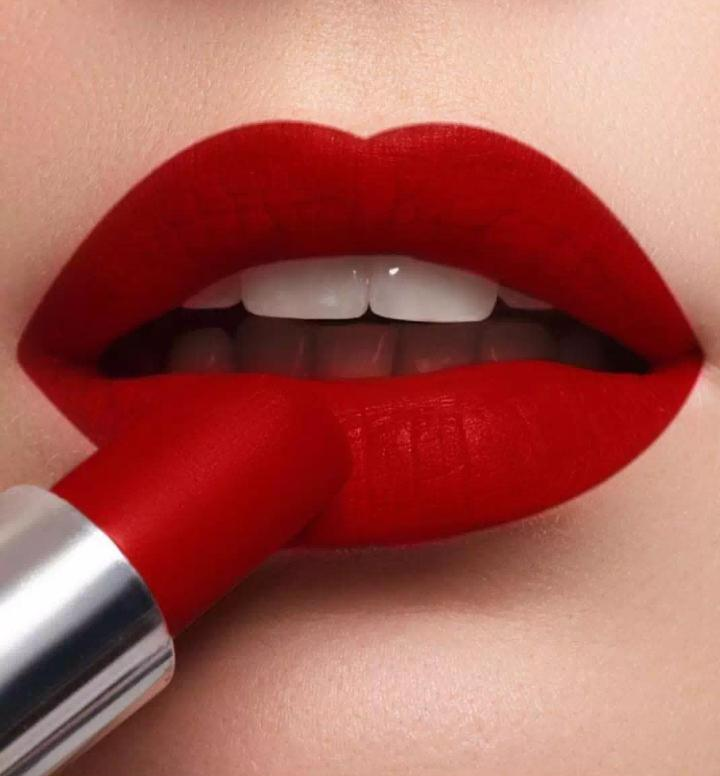

Texts by Jillian

It is an uncapped, slightly used red lipstick by the brand Makeup Forever. The black matte (towards the bottom) and glossy, (towards the applicator that comes in contact with the user) capsule that holds the red pigment block. is positioned at a slanted , roughly a little more than a 45 degree angle, the background is purely black and dark so situating this object in terms of size and space is not available.
The cap, which is also matte and matches the bottom half of the main unit of the lipstick, is placed about an half an inch below it and appears to be
steadying
the
main
unit in its slanted position.